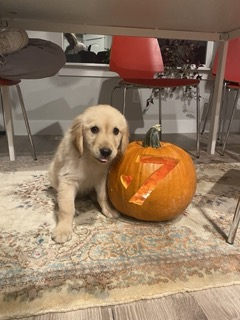
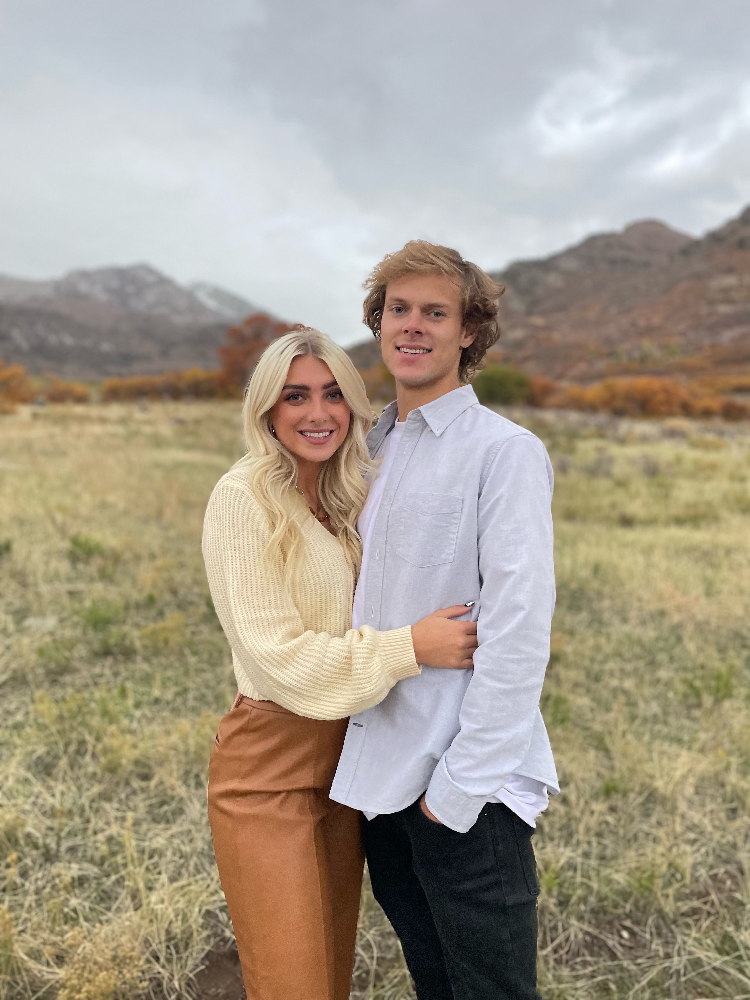

Hey There! My name is Daniel Tree and I am 24 years old. I was born in Las Vegas, Nevada on a crazy hot 120 degree day in 1997. My family moved to Utah right after I was born and that is where I spent my whole childhood. We lived in Sandy City, and the mountains are right in my backyard. I was always very adventurous and thrill seeking so it was a great place to grow up. I was always on the mountain either hiking, climbing rocks, searching for geodes, or mountain biking.
I attended Alta High School where I played soccer and won the 5A state championship my senior year in 2015. I was then called to serve a mission in Bahia Blanca, Argentina and I left just a couple months after graduating high school. I had a great expirience in Argentina and I returned home two years later in 2017.
I accepted an offer to play college soccer at Salt Lake Community College. The day after arriving home from Argentina on a plane, I hopped on a bus to travel to Wyoming for our first game. It was crazy and I was in a bit of shock! I had a great time playing soccer there for two seasons. I was thrilled to be accepted to BYU Provo and at the very beginning of 2019 I began attending classes there.
My time at BYU has been full of ups and downs, but great overall. I was accepted to the Entrepreneurial Management Program in the Marriot School of Business. My time in this program has been the most beneficial of my time in college. I have learned a great deal about all aspects of starting and running a business and I have learned from some very inspirational mentors.
In August of 2020, I got a golden retriever puppy and named her Seven. She is almost twp years old now and is the most loving and loyal friend! I take her everywhere. Right around the same time I got Seven, I started dating the love of my life Allie. We got married in August of 2021 and have been married almost nine months. I am now about to graduate from BYU and really start my life. So much has happened in the last few years, it's hard to beleive. I am just grateful to be here to be healthy and I can't wait to see where my life take me!
 My Contact Info:
Phone: 801-577-0660
Email: danieletree@gmail.com